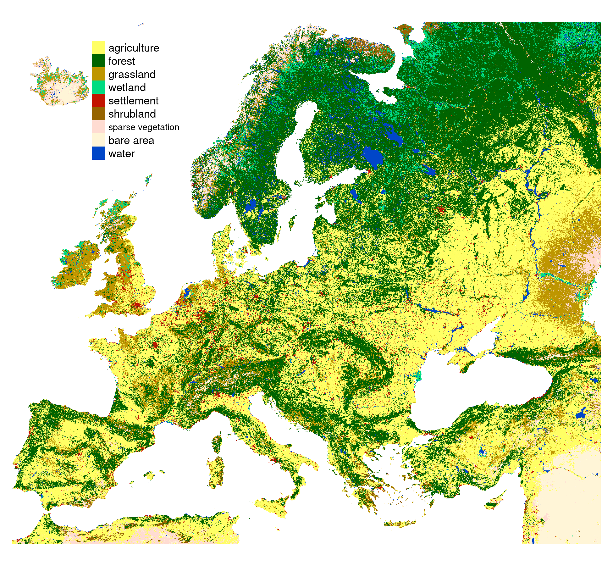
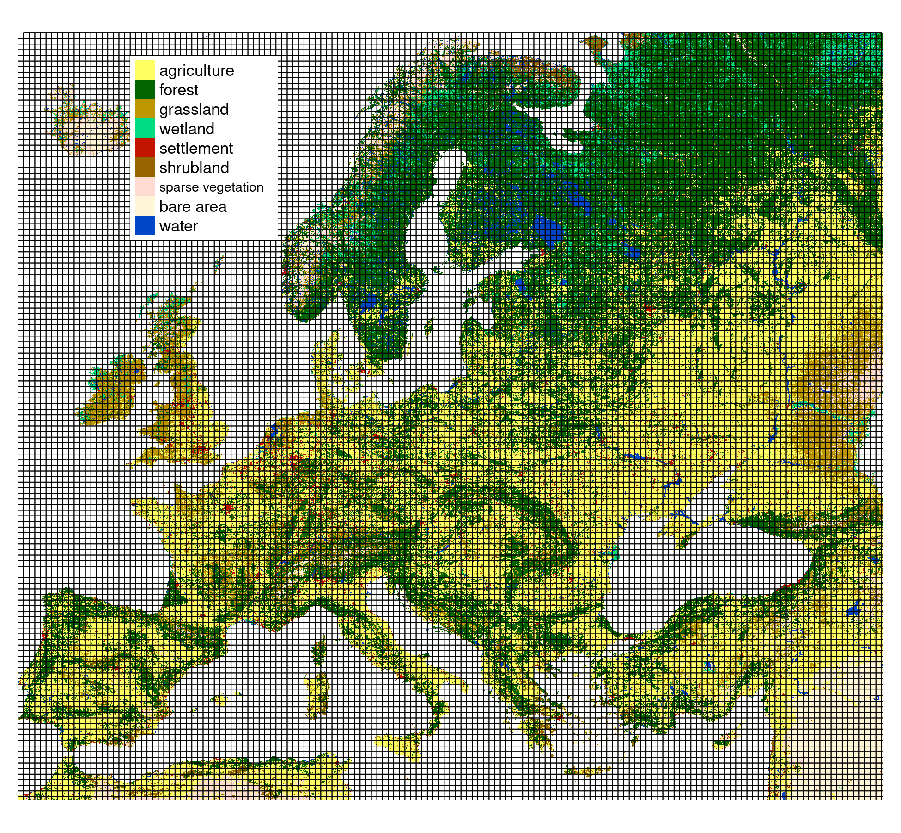
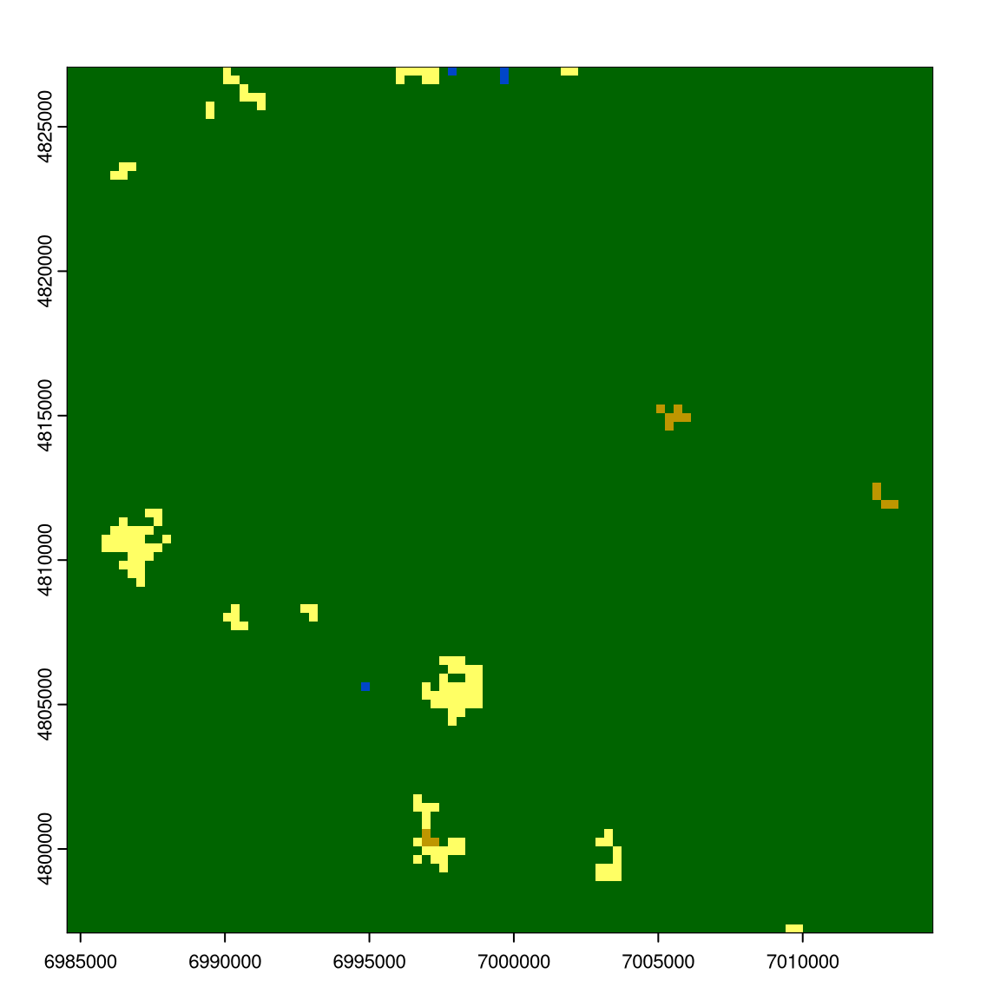
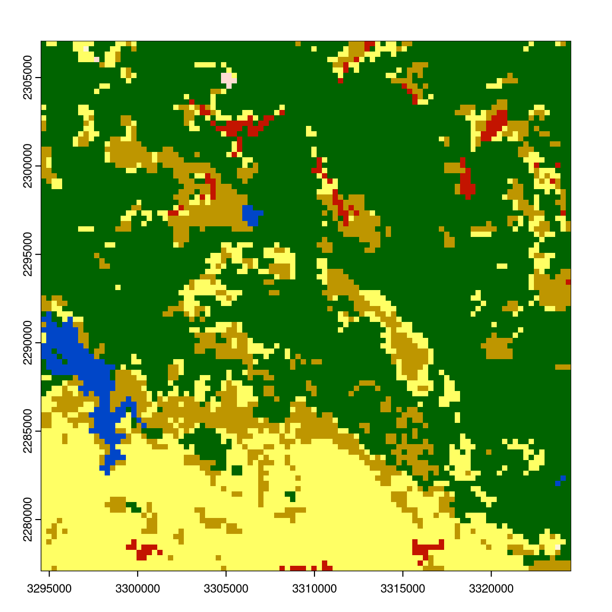
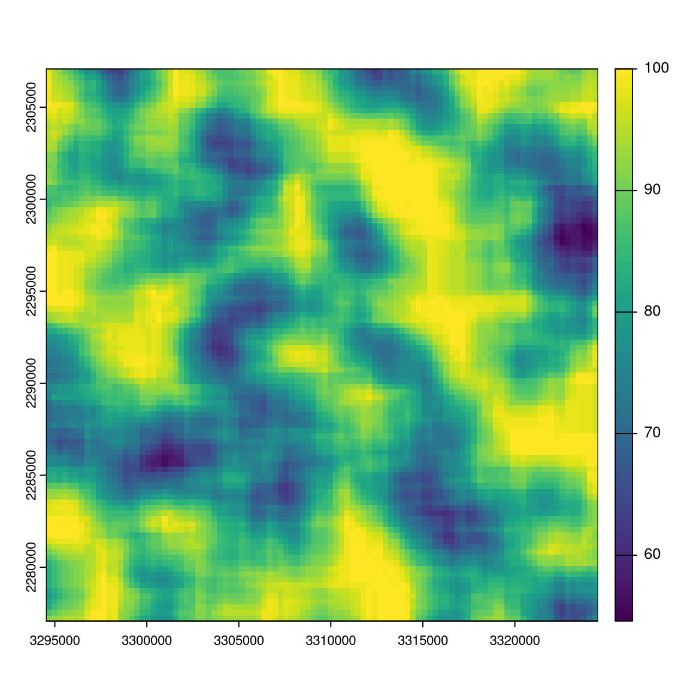

Spatial Patterns
How to discover and to describe
Spatial Patterns
Discovering and describing spatial patterns is an important part of many geographical studies, and spatial patterns are linked to natural and social processes.
{kind=link}
{kind=link}
Spatial patterns of categorical raster data
Numerous geographical studies are linked to all kind of classified raster based spatial data
{kind=link}
{kind=link}
Types of spatial patterns
Point patterns versus continous patterns

{kind=link}
Dynamics of spatial patterns
{kind=link}
Quantification of categorical spatial patterns
Spatial patterns can be quantified using landscape metrics (O’Neill et al. 1988; Turner and Gardner 1991; Li and Reynolds 1993; He et al. 2000; Jaeger 2000; Kot i in. 2006; McGarigal 2014).
Software such as FRAGSTATS, GuidosToolbox, or landscapemetrics has proven useful in many scientific studies (> 12,000 citations).
{kind=link}
There is a relationship between an area’s pattern composition and configuration and ecosystem characteristics, such as vegetation diversity, animal distributions, and water quality within this area (Hunsaker i Levine, 1995; Fahrig i Nuttle, 2005; Klingbeil i Willig, 2009; Holzschuh et al., 2010; Fahrig et al., 2011; Carrara et al., 2015; Arroyo-Rodŕıguez et al. 2016; Duflot et al., 2017, many others..)
Example data
- Land cover data for the year 2016 from the CCI-LC project
- Simplified into nine main categories
- Partitioned into 30 x 30 kilometers square blocks
- 13,909 categorical rasters (100x100 cells) https://agupubs.onlinelibrary.wiley.com/doi/epdf/10.1029/2020JD033031


—Example Data
Randomely selected 16 rasters with different proportions of forest (green) areas:
Landscape Metrics
- In the last 40 or so years, several hundred different landscape metrics were developed
- They quantify the composition and configuration of spatial patterns of categorical rasters
- General assumption is that the spatial pattern of a landscape influences the processes that occur within it
- Landscape metrics can be calculated for three different levels: patch, class, and landscape (here we focus on the landscape level)
- They can be divided into several groups: (1) area and edge metrics, (2) shape metrics, (3) core metrics, (4) aggregation metrics, (5) diversity metrics, (6) complexity metrics
Landscape Metrics
Important considerations:
- Scale: the size of the area over which the metrics are calculated
- Extent: the borders of the study area
- Spatial resolution: the size of the raster cells
- Categorization: the categories used in the analysis
- Redundancy: many metrics are highly correlated
Landscape Metrics
SHDI - Shannon’s diversity index - takes both the number of classes and the abundance of each class into account; larger values indicate higher diversity
{kind=link}
AI - Aggregation index - from 0 for maximally disaggregated to 100 for maximally aggregated classes
{kind=link}
Code examples
Taken from : “The landscapemetrics and motif packages for measuring landscape patterns and processes”
Read and visualize the data
library(landscapemetrics)
library(terra)
r9 = rast("exdata/r9.tif")
r1 = rast("exdata/r1.tif")
plot(r1); plot(r9)

Get the indices
lsm_l_shdi(r9)
# A tibble: 1 × 6
layer level class id metric value
<int> <chr> <int> <int> <chr> <dbl>
1 1 landscape NA NA shdi 1.06
lsm_l_ai(r9)
# A tibble: 1 × 6
layer level class id metric value
<int> <chr> <int> <int> <chr> <dbl>
1 1 landscape NA NA ai 82.1
calculate_lsm(r9, what = c("lsm_l_shdi", "lsm_l_ai"))
# A tibble: 2 × 6
layer level class id metric value
<int> <chr> <int> <int> <chr> <dbl>
1 1 landscape NA NA ai 82.1
2 1 landscape NA NA shdi 1.06
two_r = list(r1, r9)
calculate_lsm(two_r, what = c("lsm_l_shdi", "lsm_l_ai"))
# A tibble: 4 × 6
layer level class id metric value
<int> <chr> <int> <int> <chr> <dbl>
1 1 landscape NA NA ai 98.7
2 1 landscape NA NA shdi 0.0811
3 2 landscape NA NA ai 82.1
4 2 landscape NA NA shdi 1.06Code examples
mat_window = matrix(1, nrow = 11, ncol = 11)
w_result = window_lsm(r9, window = mat_window, what = "lsm_l_ai")
plot(r9); plot(w_result$layer_1$lsm_l_ai)

Package landscapemetrics
https://r-spatialecology.github.io/landscapemetrics/
# A tibble: 133 × 5
metric name type level function_name
<chr> <chr> <chr> <chr> <chr>
1 area patch area area and edge… patch lsm_p_area
2 cai core area index core area met… patch lsm_p_cai
3 circle related circumscribing circle shape metric patch lsm_p_circle
4 contig contiguity index shape metric patch lsm_p_contig
5 core core area core area met… patch lsm_p_core
# ℹ 134 more rows- Sampling around points of interest
- Moving window calculations
- Calculating landscape metrics for irregular areas
- Visualizations
- More…
Exercises
- Read the data from
exdata/lc_small.tifand visualize it. What is the location of the data? What are the extent of the data and its spatial resolution? How many categories it contains? - Calculate Aggregation Index (AI) for the raster. Interpret the results.
- Calculate Total Edge (TE) for the raster. Interpret the results. Next, read the data from `exdata/lc_small2.tif, calculate AI and TE for this raster, and compare the results with the previous raster.
- Calculate Total Edge (TE) for the raster, but this time in a moving window of 9 by 9 cells. Visualize the results.
- (Extra) Using the
read_sf()function from the sf package, read theexdata/points.gpkgfile. Next, calculate SHDI and AI of an area of 3000 meters from each sampling point (see thesample_lsm()function).